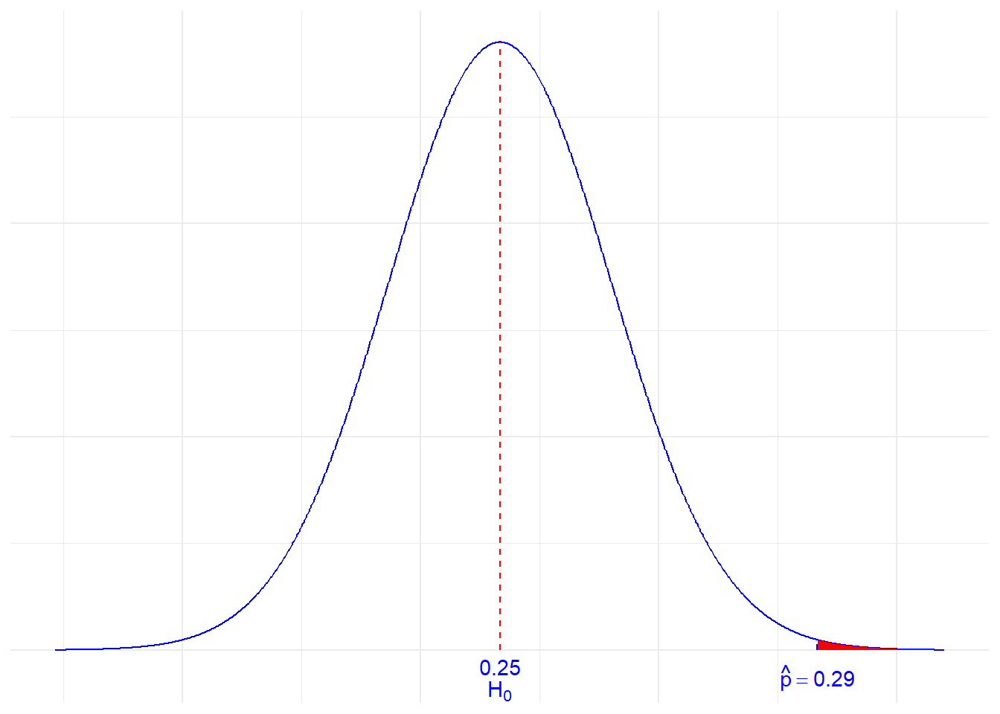
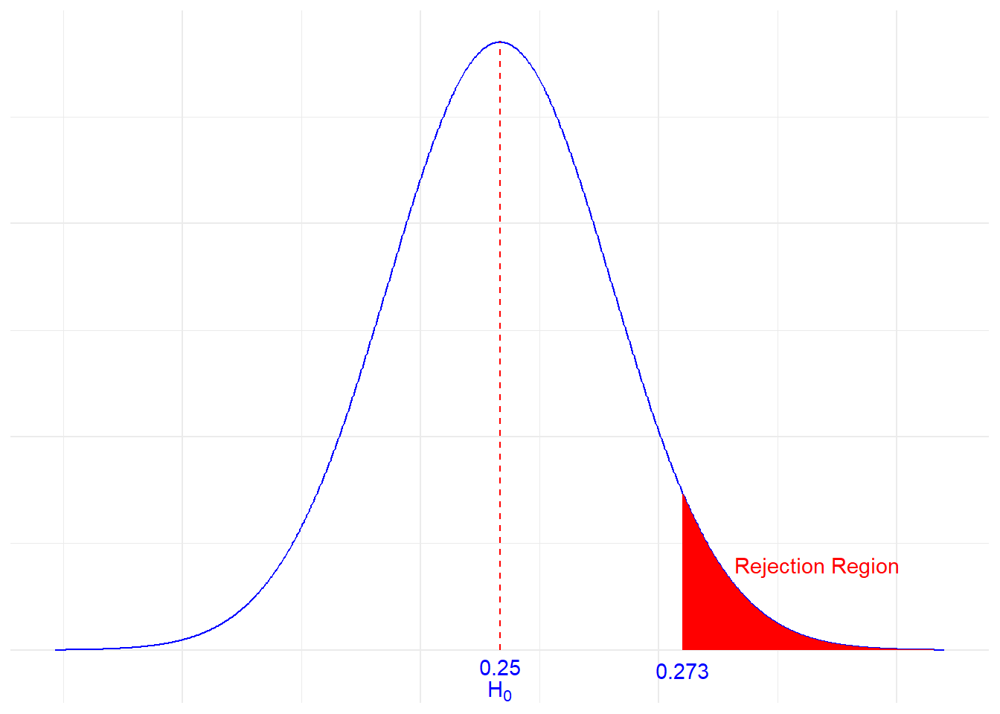
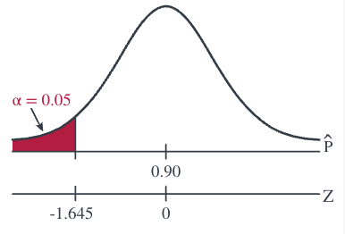

9 Uji Hipotesis (Bagian I)
Uji Hipotesis
Uji Proporsi
Uji Satu Rataan
Nilai-p
Gambaran Umum
Pada bagian-bagian sebelumnya, kita mengembangkan metode statistika, terutama berupa selang kepercayaan, untuk menjawab pertanyaan “berapakah nilai parameter \(\theta\)?” Pada bagian ini, kita akan mempelajari cara menjawab pertanyaan yang sedikit berbeda, yaitu “apakah nilai parameter \(\theta\) adalah nilai tertentu?” Sebagai contoh, alih-alih mencoba menduga \(\mu\), rataan suhu tubuh orang dewasa, kita mungkin tertarik untuk menguji apakah \(\mu\), rataan suhu tubuh orang dewasa, benar-benar 37 derajat Celsius. Kita akan mencoba menjawab pertanyaan semacam itu dengan metode statistika yang dikenal sebagai pengujian hipotesis.
Tujuan
Setelah menyelesaikan pelajaran ini, Anda diharapkan mampu:
- Menyusun uji hipotesis dengan menggunakan distribusi suatu penduga,
- Menarik kesimpulan pengujian dengan pendekatan nilai-p,
- Menarik kesimpulan pengujian dengan pendekatan nilai kritis,
- Menafsirkan dengan jelas hasil uji hipotesis, dan
- Menafsirkan dengan jelas jenis-jenis galat beserta peluangnya masing-masing.
9.1 Pengantar Uji Hipotesis
9.1.1 Istilah Dasar
Sebelum mempelajari teori statistika yang mendasari uji hipotesis, terlebih dahulu kita perlu memahami istilah-istilah dasarnya.
Langkah pertama dalam pengujian hipotesis adalah merumuskan dua hipotesis yang saling bersaing (dan saling lepas). Ini merupakan aspek terpenting dalam uji hipotesis. Jika hipotesisnya keliru, kesimpulan pengujiannya juga akan keliru.
Kedua hipotesis itu disebut hipotesis nol dan hipotesis alternatif.
Def. 9.1 (Hipotesis Nol) Istilah hipotesis nol biasanya dilambangkan dengan \(H_0\). Hipotesis nol menyatakan “status quo”. Hipotesis ini dianggap benar sampai ada bukti yang menunjukkan sebaliknya.
Def. 9.2 (Hipotesis Alternatif) Istilah hipotesis alternatif biasanya dilambangkan dengan \(H_a\) atau \(H_1\). Inilah pernyataan yang ingin kita simpulkan. Hipotesis ini juga disebut hipotesis penelitian.
Contoh 9.1 Seorang pria, Tn. Orangejuice, diadili atas tuduhan membunuh mantan istrinya. Ia bersalah atau tidak bersalah. Rumuskan hipotesis nol dan hipotesis alternatif untuk contoh ini.
Solusi
Dalam kerangka pengujian hipotesis, hipotesis yang diuji adalah: 1. Pria itu bersalah. 2. Pria itu tidak bersalah.
Mari kita rumuskan hipotesis nol dan hipotesis alternatif.
\[\begin{align} H_0&\colon\text{ Mr. Orangejuice is innocent}\\ H_a&\colon\text{ Mr. Orangejuice is guilty} \end{align}\]
Ingatlah bahwa kita menganggap hipotesis nol benar dan berusaha melihat apakah ada bukti yang menentangnya. Oleh karena itu, dalam contoh ini masuk akal untuk menganggap pria tersebut tidak bersalah, lalu menguji apakah ada bukti bahwa ia bersalah.
9.1.2 Logika Pengujian Hipotesis
Kita ingin mengetahui jawaban atas suatu pertanyaan penelitian. Kita menentukan hipotesis nol dan hipotesis alternatif. Sekarang saatnya mengambil keputusan.
Keputusannya akan berupa salah satu dari berikut ini…
- Menolak hipotesis nol atau…
- Gagal menolak hipotesis nol
Perhatikan tabel berikut. Tabel tersebut menunjukkan keputusan atau kesimpulan uji hipotesis dan “kenyataan”, atau kebenaran, yang tidak diketahui. Kita tidak mengetahui apakah hipotesis nol benar atau salah. Jika hipotesis nol salah dan kita menolaknya, kita mengambil keputusan yang benar. Jika hipotesis nol benar dan kita gagal menolaknya, kita juga mengambil keputusan yang benar.
| Keputusan | Kenyataan | |
|---|---|---|
| \(H_0\) benar | \(H_0\) salah | |
| Menolak \(H_0\) (Menyimpulkan \(H_a\)) | Keputusan yang benar | |
| Gagal Menolak \(H_0\) | Keputusan yang Benar | |
Lalu, apa yang terjadi ketika kita tidak mengambil keputusan yang benar?
Dalam pengujian hipotesis, ada dua jenis galat yang dapat terjadi, yaitu galat tipe I dan galat tipe II. Jika kita menolak hipotesis nol ketika hipotesis tersebut benar, kita melakukan galat tipe I. Jika hipotesis nol salah dan kita gagal menolaknya, kita melakukan galat lain yang disebut galat tipe II.
| Keputusan | Kenyataan | |
|---|---|---|
| \(H_0\) benar | \(H_0\) salah | |
| Menolak \(H_0\) (Menyimpulkan \(H_a\)) | Galat Tipe I | Keputusan yang benar |
| Gagal Menolak \(H_0\) | Keputusan yang benar | Galat Tipe II |
Jenis-Jenis Galat
Galat Tipe I: Terjadi ketika kita menolak hipotesis nol padahal hipotesis nol benar.
Galat Tipe II: Terjadi ketika kita gagal menolak hipotesis nol padahal hipotesis nol salah.
“Kenyataan”, atau kebenaran, mengenai hipotesis nol tidak diketahui. Karena itu, kita tidak mengetahui apakah kita telah mengambil keputusan yang benar atau melakukan galat. Namun, kita dapat mendefinisikan peluang kejadian-kejadian tersebut.
Def. 9.3 (\(\alpha\) (“alfa”)) Peluang melakukan galat tipe I. Juga dikenal sebagai tingkat signifikansi.
Def. 9.4 (\(\beta\) (“beta”):) Peluang melakukan galat tipe II.
9.1.3 Kuasa Uji
Pada nilai parameter alternatif tertentu θ, kuasa uji adalah peluang menolak hipotesis nol ketika nilai θ itu benar, yaitu \(\operatorname{kuasa}(\theta)=1-\beta(\theta)\)).
\(\alpha\) dan \(\beta(\theta)\) adalah peluang melakukan galat, sehingga kita menginginkan keduanya kecil. Untuk ukuran sampel, keluarga uji, dan nilai parameter alternatif yang tetap, penurunan salah satunya umumnya menaikkan yang lain. Namun, penambahan informasi—misalnya dengan memperbesar ukuran sampel—dapat menurunkan keduanya. Ketika \(\alpha\) menurun, \(\beta(\theta)\) meningkat.
Contoh 9.2 Seorang pria, Tn. Orangejuice, diadili atas tuduhan membunuh mantan istrinya. Ia bersalah atau tidak bersalah. Sebelumnya kita telah memperoleh bahwa…
\[\begin{align} H_0&\colon\text{ Mr. Orangejuice is innocent}\\ H_a&\colon\text{ Mr. Orangejuice is guilty} \end{align}\]
Tafsirkan galat tipe I, galat tipe II, \(\alpha\), dan \(\beta\).
Solusi
Galat Tipe I:
Galat tipe I terjadi jika kita menolak \(H_0\) ketika hipotesis tersebut benar. Dengan kata lain, ketika pria itu tidak bersalah tetapi dinyatakan bersalah.
Galat Tipe II:
Galat tipe II terjadi jika kita gagal menolak \(H_0\) ketika hipotesis tersebut salah. Dengan kata lain, ketika pria itu bersalah tetapi dinyatakan tidak bersalah.
\(\alpha\):
peluang terjadinya galat tipe I, atau dengan kata lain, peluang bahwa Tn. Orangejuice tidak bersalah tetapi dinyatakan bersalah.
\(\beta\):
peluang terjadinya galat tipe II, atau dengan kata lain, peluang bahwa Tn. Orangejuice bersalah tetapi dinyatakan tidak bersalah.
Seperti yang terlihat di sini, galat tipe I (memasukkan orang yang tidak bersalah ke penjara) merupakan galat yang lebih serius. Dari segi etika, memasukkan orang yang tidak bersalah ke penjara lebih serius daripada membiarkan orang yang bersalah bebas. Jadi, untuk memperkecil peluang galat tipe I, kita akan memilih tingkat signifikansi yang lebih kecil.
Cobalah!
Seorang pemeriksa harus memilih antara menyatakan bahwa sebuah bangunan aman atau menyatakan bahwa bangunan tersebut tidak aman. Ada dua hipotesis:
- Bangunan tidak aman
- Bangunan aman
Rumuskan hipotesis nol dan hipotesis alternatif. Tafsirkan galat tipe I dan galat tipe II.
Solusi
| \(H_0\) benar | \(H_0\) salah | |
|---|---|---|
| Menolak \(H_0\) (Menyimpulkan \(H_a\)) | Menolak “Bangunan tidak aman” ketika bangunan itu aman. (Galat Tipe I) | Keputusan yang benar |
| Gagal Menolak \(H_0\) | Keputusan yang Benar | Gagal menolak “bangunan tidak aman” ketika bangunan itu tidak aman (Galat Tipe II) |
Kuasa uji dan \(\beta\) merupakan komplemen satu sama lain. Oleh karena itu, keduanya berhubungan terbalik, yaitu ketika yang satu meningkat, yang lain menurun.
Masuk akal bagi kita untuk menetapkan \(H_0\) dan \(H_a\) seperti di atas (yaitu, menganggap bangunan tidak aman sampai terbukti sebaliknya), karena jika kita menukar \(H_0\) dan \(H_a\) (yaitu, jika \(H_0\) menyatakan bahwa bangunan itu tidak aman) dan jika kita gagal menolak \(H_0\), kita tidak dapat begitu saja menyimpulkan bahwa bangunan itu aman (kita hanya dapat gagal menolak \(H_0\), kita tidak dapat menerima \(H_0\)).
9.1.4 Langkah-Langkah Pengujian Hipotesis
Dalam statistika, hipotesis adalah pernyataan tentang suatu parameter populasi, dan pernyataan ini biasanya direpresentasikan oleh nilai numerik tertentu. Dalam menguji hipotesis, kita menggunakan metode dengan mengumpulkan data guna memperoleh bukti mengenai hipotesis tersebut.
Bagaimana kita memutuskan apakah akan menolak hipotesis nol?
- Jika data sampel konsisten dengan hipotesis nol, kita tidak menolaknya.
- Jika data sampel tidak konsisten dengan hipotesis nol, tetapi konsisten dengan hipotesis alternatif, kita menolak hipotesis nol. Data itu memberikan bukti yang cukup untuk mendukung hipotesis alternatif, tetapi tidak membuktikannya benar karena galat tipe I tetap mungkin terjadi.
Enam Langkah Uji Hipotesis
Dalam pengujian hipotesis, ada langkah-langkah tertentu yang harus diikuti. Langkah-langkah tersebut dirangkum di bawah ini menjadi enam langkah untuk melakukan uji hipotesis.
Rumuskan hipotesis dan periksa syarat-syaratnya: Setiap uji hipotesis mencakup dua hipotesis tentang populasi. Yang pertama adalah hipotesis nol, yang dilambangkan dengan \(H_0\), yaitu pernyataan mengenai suatu nilai parameter tertentu. Hipotesis ini dianggap benar sampai ada bukti yang menunjukkan sebaliknya. Hipotesis kedua disebut hipotesis alternatif, atau hipotesis penelitian, yang dilambangkan dengan \(H_a\). Hipotesis alternatif adalah pernyataan mengenai rentang nilai alternatif yang mungkin memuat nilai parameter. Kita juga harus memeriksa bahwa setiap syarat (asumsi) yang diperlukan untuk menjalankan uji telah terpenuhi, misalnya kenormalan data, kebebasan, serta banyaknya hasil sukses dan gagal.
Tentukan tingkat signifikansi, \(\alpha\): Nilai ini digunakan sebagai batas peluang untuk mengambil keputusan mengenai hipotesis nol. Nilai alfa ini menyatakan peluang terjadinya keputusan keliru yang bersedia kita tanggung dalam pengujian ketika menolak hipotesis nol. Nilai \(\alpha\) yang paling umum adalah 0.05 atau 5%. Pilihan lain yang populer adalah 0.01 (1%) dan 0.1 (10%).
Hitung statistik uji: Kumpulkan data sampel dan hitung statistik uji dengan membandingkan statistik sampel terhadap nilai parameter. Statistik uji dihitung dengan menganggap hipotesis nol benar serta memperhitungkan ukuran galat baku dan asumsi (syarat) yang berkaitan dengan distribusi penarikan sampel. Catatan: Kita perlu mengetahui distribusi statistik uji di bawah hipotesis nol.
Hitung nilai peluang (nilai-p), atau tentukan daerah penolakan: Nilai-p adalah peluang, di bawah hipotesis nol, memperoleh statistik uji yang sekurang-kurangnya sama ekstrem dengan nilai teramati. Dalam edisi ini, H₀ ditolak ketika nilai-p ≤ α. Daerah penolakan ditentukan dengan menggunakan alfa untuk mencari nilai kritis; daerah penolakan adalah wilayah yang sekurang-kurangnya sama ekstrem dengan batas kritis. Misalkan statistik uji kita dilambangkan dengan \(T^*\). Untuk menentukan daerah penolakan, dicari suatu nilai kritis, \(c\), yang berfungsi sebagai nilai batas. Sebagai contoh,
Jika \(|T^*|\ge c\), kita mengambil satu keputusan, yaitu menolak \(H_0\)
Jika \(|T^*|<c\), kita mengambil keputusan lainnya, yaitu gagal menolak \(H_0\).
Konvensi batas edisi ini: tolak H₀ bila |T*| ≥ c dan gagal menolaknya bila |T*| < c. Untuk hukum nol kontinu yang sesuai, kejadian |T*| = c biasanya berpeluang nol. Pada uji diskret bertaraf eksak, tindakan pada himpunan kesamaan harus ditetapkan secara deterministik atau diacak agar ukuran yang diminta tercapai.
Nilai batas, \(c\), ditentukan oleh tingkat pengujian, \(\alpha\).
Nilai-p dan daerah penolakan akan kita bahas secara lebih terperinci pada bagian-bagian berikutnya.
Ambil keputusan mengenai hipotesis nol: Pada langkah ini, kita memutuskan untuk menolak hipotesis nol atau gagal menolak hipotesis nol. Perhatikan bahwa kita tidak mengambil keputusan untuk menerima hipotesis nol.
Nyatakan kesimpulan keseluruhan: Setelah memperoleh nilai-p atau daerah penolakan dan mengambil keputusan statistika mengenai hipotesis nol (yaitu menolak atau gagal menolak hipotesis nol), kita merangkum hasil tersebut menjadi kesimpulan keseluruhan dari pengujian.
Sepanjang bagian selanjutnya dari pelajaran ini, kita akan mengikuti keenam langkah tersebut, meskipun langkah-langkahnya mungkin tidak dijelaskan secara eksplisit.
Langkah 1 sangat penting untuk dirumuskan dengan benar. Jika hipotesis Anda keliru, kesimpulan Anda juga akan keliru. Pada bagian-bagian berikutnya, kita akan terus berlatih menerapkan Langkah 1.
9.2 Uji Proporsi
Setiap kali melakukan uji hipotesis, kita akan mengikuti prosedur dasar berikut:
- Kita akan membuat asumsi awal mengenai parameter populasi.
- Kita akan mengumpulkan bukti atau menggunakan bukti yang dikumpulkan orang lain (dalam kedua kasus, bukti tersebut berbentuk data).
- Berdasarkan bukti (data) yang tersedia, kita akan memutuskan apakah akan “menolak” atau “gagal menolak” asumsi awal.
Mari kita buat prosedur yang telah diuraikan ini menjadi lebih konkret dengan mengkaji uji untuk satu proporsi. Setelah itu, kita akan menguraikan beberapa uji statistika umum lainnya.
Mari kita perhatikan contoh berikut.
Contoh 9.3 Sebuah dadu bersisi empat (berbentuk tetrahedron) dilempar 1000 kali, dan sisi empat muncul 290 kali. Apakah terdapat bukti untuk menyimpulkan bahwa dadu tersebut tidak seimbang, yaitu bahwa sisi empat muncul lebih sering daripada yang diharapkan?
Dadu tetrahedral bersisi empat pada Contoh 9.3; setiap lemparan menghasilkan salah satu dari empat sisi.
Solusi
Sebagaimana diuraikan dalam prosedur dasar pengujian hipotesis di atas, langkah pertama mencakup pernyataan asumsi awal dan penentuan parameter yang menjadi perhatian. Parameter yang menjadi perhatian di sini adalah \(p\), peluang memperoleh angka 4. Asumsinya adalah bahwa dadu itu seimbang. Jika dadu itu seimbang, setiap sisi (1, 2, 3, dan 4) memiliki peluang yang sama. Jadi, kita akan menganggap bahwa \(p\), peluang memperoleh angka 4, adalah 0.25.
Oleh karena itu, hipotesis nol, atau “status quo”, menyatakan bahwa parameter populasi \(p\) sama dengan 0.25. Secara simbolis: \[H_0:p=0.25\]
Dalam informasi yang diberikan, dipertanyakan apakah angka empat muncul lebih sering daripada yang diharapkan. Oleh karena itu, hipotesis alternatifnya adalah:
\[H_a:p>0.25\]
Langkah kedua adalah menentukan tingkat signifikansi, \(\alpha\). Pada umumnya, tingkat signifikansi yang paling sering digunakan adalah \(\alpha=0.05\). Oleh karena itu, mari kita pilih \(P(\text{Type I error})=\alpha=0.05\). Dengan demikian, peluang kita menolak hipotesis nol dengan syarat hipotesis nol benar adalah 5%.
Sekarang, langkah berikutnya menyatakan bahwa kita perlu mengumpulkan bukti (data) yang mendukung atau menentang asumsi awal. Dalam kasus ini, hal tersebut sudah dilakukan. Kita diberi tahu bahwa dadu dilempar \(n=1000\) kali, dan tercatat \(y=290\) untuk banyaknya kemunculan angka empat. Kita dapat menggunakan proporsi sampel untuk menduga parameter populasi. Dengan demikian, kita memperoleh:
\[\hat{p}=\frac{y}{n}=\frac{290}{1000}=0.29\]
Sekarang kita hanya perlu menyelesaikan langkah ketiga, yaitu memutuskan apakah akan menolak asumsi awal bahwa proporsi populasi adalah 0.25. Kita perlu menggunakan perangkat yang sejauh ini telah kita kembangkan dalam mata kuliah ini dan STAT 414. Ingat bahwa Teorema Limit Pusat menyatakan bahwa proporsi sampel:
\[\hat{p}=\frac{Y}{n}\]
berdistribusi Normal secara hampiran dengan rataan (yang diasumsikan)
\[p_0=0.25\] dan simpangan baku (yang diasumsikan):
\[\sqrt{\frac{p_0(1-p_0)}{n}}=\sqrt{\frac{0.25(1-0.25)}{1000}}=0.01369\]
Artinya:
\[Z=\dfrac{\hat{p}-p_0}{\sqrt{\dfrac{p_0(1-p_0)}{n}}}\]
mengikuti hukum \(N(0, 1)\) yang merupakan distribusi Normal baku. Kita dapat “memetakan” proporsi sampel teramati sebesar 0.29 ke skala \(Z\) berikut. Gambar berikut merangkum situasinya:
Catatan reprodusibilitas: gambar ini adalah keluaran beku dari sumber resmi. Sumber tidak memublikasikan kode pembangkit, data masukan, kunci lingkungan, atau keadaan acak; karena itu yang dapat diverifikasi secara deterministik di sini hanyalah bita keluaran gambar, bukan regenerasi plot dari sumber.
Jadi, kita menganggap proporsi populasi adalah 0.25, tetapi kita mengamati proporsi sampel sebesar 0.290 yang terletak jauh di ekor kanan distribusi Normal. Memperoleh proporsi sampel 0.29 jelas bukan hal yang mustahil. Namun, kita tetap harus memutuskan apakah proporsi sampel 0.290 lebih ekstrem daripada yang diharapkan jika proporsi populasi \(p\) memang sama dengan 0.25.
Langkah berikutnya adalah menentukan cara mengambil keputusan. Ada dua pendekatan untuk mengambil keputusan dalam pengujian hipotesis:
- Salah satunya disebut pendekatan “daerah penolakan” (atau “nilai kritis” atau “daerah kritis”).
- Pendekatan lainnya menggunakan “nilai-p” sebagai dasar pengambilan keputusan.
Pertama, mari kita perhatikan pendekatan daerah penolakan.
Baiklah, sekarang mari kita pikirkan. Kita mungkin tidak akan menolak asumsi awal bahwa proporsi populasi \(p=0.25\) jika proporsi sampel teramati sebesar 0.255. Kita mungkin juga masih belum cenderung menolak asumsi awal bahwa proporsi populasi \(p=0.25\) jika proporsi sampel teramati sebesar 0.27. Di sisi lain, kita hampir pasti ingin menolak asumsi awal bahwa proporsi populasi \(p=0.25\) jika proporsi sampel teramati sebesar 0.35. Ini menunjukkan adanya suatu nilai “ambang” yang, setelah “dilampaui”, membuat kita cenderung menolak asumsi awal. Singkatnya, itulah pendekatan nilai kritis. Pendekatan ini menetapkan nilai ambang yang disebut “nilai kritis”, sehingga jika “statistik uji” lebih ekstrem daripada nilai kritis, kita menolak hipotesis nol.
Ingatlah bahwa kita menetapkan tingkat signifikansi, \(\alpha\), sebesar 5%. Karena kita menggunakan distribusi Normal baku, kita akan mencari nilai \(Z\) yang lebih besar daripada 1.645. Dengan kata lain, kita memutuskan untuk menolak hipotesis nol \(H_0:p=0.25\) demi mendukung “hipotesis alternatif” \(H_a:p>0.25\) jika:
\[Z>1.645\Longleftrightarrow \hat{p}>0.272525\ldots\Longleftrightarrow Y\ge273\Longleftrightarrow \hat{p}\ge0.273\]
Berikut gambar dari “daerah penolakan” semacam itu (atau “daerah kritis”):

Catatan reprodusibilitas: gambar ini adalah keluaran beku dari sumber resmi. Sumber tidak memublikasikan kode pembangkit, data masukan, kunci lingkungan, atau keadaan acak; karena itu yang dapat diverifikasi secara deterministik di sini hanyalah bita keluaran gambar, bukan regenerasi plot dari sumber.
Dengan hampiran Normal yang digunakan di sini, ‘ukuran’ daerah kritis sekitar 0,05, bukan tepat 0,05. Untuk aturan diskret Y ≥ 273, ukuran Binomial eksaknya 0,0511947; tingkat eksak 0,05 memerlukan pengacakan pada Y = 273. Hal ini akan berkaitan dengan peluang galat yang dibahas di bawah.
Bagaimanapun, mari kembali memutuskan apakah proporsi sampel khusus kita tampak terlalu ekstrem. Tampaknya kita harus menolak hipotesis nol (asumsi awal kita bahwa \(p=0.25\)) karena:
\[\hat{p}=0.29>0.273\]
atau, secara ekuivalen, karena statistik uji kita:
\[Z=\dfrac{\hat{p}-p_0}{\sqrt{\dfrac{p_0(1-p_0)}{n}}}=\dfrac{0.29-0.25}{\sqrt{\dfrac{0.25(0.75)}{1000}}}=2.92\]
lebih besar daripada 1.645.
Kesimpulan kita: kita menyatakan bahwa terdapat bukti yang cukup untuk menyimpulkan \(H_a:p>0.25\), yaitu bahwa dadu tersebut tidak seimbang.
Sebagai tambahan, contoh ini melibatkan apa yang disebut uji satu sisi, atau lebih khusus lagi, uji sisi kanan, karena daerah kritis hanya terletak di salah satu dari dua ekor distribusi Normal, yaitu ekor kanan.
Sebelum melanjutkan ke halaman berikutnya dan melihat dua contoh lain, mari kita tinjau kembali prosedur dasar pengujian hipotesis yang diuraikan di atas. Kali ini, mari kita nyatakan prosedur tersebut dalam konteks melakukan uji hipotesis untuk proporsi populasi dengan menggunakan pendekatan nilai kritis. Prosedur dasarnya adalah:
- Nyatakan hipotesis nol \(H_0\) dan hipotesis alternatif \(H_a\).
- Hitung statistik uji (yang diperoleh dengan menggunakan distribusi statistik uji di bawah hipotesis nol):
\[\begin{align*} Z=\dfrac{\hat{p}-p_0}{\sqrt{\dfrac{p_0(1-p_0)}{n}}} \end{align*}\]
- Tentukan daerah penolakan.
- Ambil keputusan. Tentukan apakah statistik uji berada di daerah kritis. Jika ya, tolak hipotesis nol. Jika tidak, kita gagal menolak hipotesis nol.
Sekarang, mari kembali membahas kemungkinan galat yang dapat kita lakukan ketika menjalankan uji hipotesis semacam itu.
9.3 Kemungkinan Galat
Aduh! Setiap kali melakukan uji hipotesis, kita berpeluang melakukan galat. (Astaga, mengapa saya tidak memilih profesi lain?!)
Jika kita menolak hipotesis nol \(H_0\) (demi mendukung hipotesis alternatif) ketika hipotesis nol sebenarnya benar, kita dikatakan telah melakukan galat tipe I. Untuk contoh di atas, kita menetapkan P(galat tipe I) sama dengan 0.05:
Gambar 9.3 — Di bawah H₀: p = 0,25, batas Z = 1,645 atau p-hat = 0,273 memisahkan daerah gagal menolak dari daerah penolakan ekor kanan dengan α ≈ 0,05. Kita ingin memperkecil peluang melakukan galat tipe I! Secara umum, kita melambangkannya dengan \(\alpha=P({\text{Type I error}})=\text{ the significance level}\). Jelas, kita ingin memperkecil \(\alpha\). Oleh karena itu, nilai \(\alpha\) yang umum adalah 0.01, 0.05, dan 0.10.
Jika kita gagal menolak hipotesis nol ketika hipotesis nol salah, kita dikatakan telah melakukan galat tipe II. Untuk contoh ini, misalkan (tanpa kita ketahui) proporsi populasi \(p\) sebenarnya 0.27. Dalam hal ini, peluang galat tipe II adalah:
\[\begin{aligned}\beta(0.27)&=P_{p=0.27}(\hat{p}<0.273)\\&\approx P\!\left(Z<\frac{0.273-0.27}{\sqrt{0.27(0.73)/1000}}\right)=P(Z<0.214)\approx0.5847\end{aligned}\]
Secara umum, kita melambangkannya dengan \(\beta=P(\text{Type II error})\). Sama seperti kita ingin memperkecil \(\alpha=P(\text{Type I error})\), kita juga ingin memperkecil \(\beta=P(\text{Type II error})\). Nilai \(\beta\) yang umum adalah 0.05, 0.10, dan 0.20.
{kind=link}
9.4 Pendekatan Nilai-p
Hingga saat ini, kita menggunakan pendekatan daerah kritis dalam melakukan uji hipotesis. Sekarang, mari kita lihat contoh yang menggunakan apa yang disebut pendekatan nilai-p.
Contoh 9.4 (Kanker Paru) Bagian I
Di antara pasien kanker paru, biasanya 90% atau lebih meninggal dalam waktu tiga tahun. Dengan adanya bentuk-bentuk pengobatan baru, angka ini diduga telah menurun. Misalkan dalam suatu studi terbaru terhadap n = 150 pasien kanker paru, y = 128 meninggal dalam waktu tiga tahun. Apakah, pada tingkat \(\alpha=0.05\) , terdapat bukti yang cukup untuk menyimpulkan bahwa angka kematian akibat kanker paru telah menurun?
Solusi
Proporsi sampelnya adalah:
\[\begin{align*} \hat{p}=\dfrac{128}{150}=0.853 \end{align*}\]
Hipotesis nol dan hipotesis alternatif adalah: \[\begin{align*} H_0 \colon p = 0.90 \text { and } H_A: p<0.9 \end{align*}\]
Dengan demikian, statistik ujinya adalah: \[\begin{align*} Z=\dfrac{\hat{p}-p_0}{\sqrt{\dfrac{p_0(1-p_0)}{n}}}=\dfrac{0.853-0.90}{\sqrt{\dfrac{0.90(0.10)}{150}}}=-1.92 \end{align*}\]
Daerah penolakannya adalah:

Uji ekor kiri bertaraf 0,05: tolak H₀ bila Z ≤ −1,645; di sebelah kanan batas itu, gagal menolak H₀.Karena statistik uji \(Z = −1.92 < −1.645\), kita menolak hipotesis nol. Terdapat bukti yang cukup pada tingkat \(\alpha=0.05\) untuk menyimpulkan bahwa angka kematian telah menurun.
Bagian II
Bagaimana jika kita menetapkan tingkat signifikansi \(\alpha=P(\text{Type I error})=0.01\)? Apakah masih terdapat bukti yang cukup untuk menyimpulkan bahwa angka kematian akibat kanker paru telah menurun?
Solusi
Dalam kasus ini, dengan \(\alpha=0.01\), daerah penolakannya adalah \(Z ≤ −2.33\). Artinya, kita menolak jika statistik uji berada dalam daerah penolakan yang ditentukan oleh \(Z ≤ −2.33\):
{kind=link}
Karena statistik uji \(Z = −1.92 > −2.33\), kita gagal menolak hipotesis nol. Tidak terdapat bukti yang cukup pada tingkat \(\alpha=0.01\) untuk menyimpulkan bahwa angka kematian telah menurun.
Bagian III
Pada bagian pertama contoh ini, kita menolak hipotesis nol ketika \(\alpha=0.05\). Pada bagian kedua contoh ini, kita gagal menolak hipotesis nol ketika \(\alpha=0.01\). Jadi, pasti ada suatu tingkat \(\alpha\)tempat kita melintasi ambang dari menolak menjadi tidak menolak hipotesis nol. Berapakah tingkat \(\alpha-\)terkecil yang masih membuat kita menolak hipotesis nol?
Penyelesaian
Tentu saja, kita akan menolak setiap kali nilai kritis lebih kecil daripada statistik uji kita, \(−1.92\):
{kind=link}
Artinya, kita akan menolak jika nilai kritisnya \(−1.645\), \(−1.83\), dan \(−1.92\). Namun, kita tidak akan menolak jika nilai kritisnya \(−1.93\). Tingkat \(\alpha-\)yang berkaitan dengan statistik uji \(−1.92\) disebut nilai-p. Nilai-p adalah tingkat \(\alpha-\)terkecil yang akan menghasilkan penolakan. Dalam kasus ini, nilai-p adalah: \[\begin{align*} P(Z<-1.92)=0.0274 \end{align*}\]
Mari kita rumuskan definisi nilai-p secara formal, lalu merangkum pendekatan nilai-p untuk melakukan uji hipotesis.
Def. 9.5 (Nilai-p) Istilah Nilai-p adalah tingkat signifikansi terkecil yang membuat kita menolak hipotesis nol.
Sebagai rumusan yang setara (dan cara yang saya sukai untuk memahami nilai-p), nilai-p adalah peluang, dengan menganggap hipotesis nol benar, untuk mengamati statistik uji yang sekurang-kurangnya sama ekstrem dengan statistik yang kita amati.
Jika nilai-p kecil, yaitu jika \(P\le \alpha\), maka kita menolak hipotesis nol. \(H_0\).
Sejauh ini, semua contoh yang kita bahas melibatkan uji hipotesis satu sisi dengan hipotesis alternatif yang memuat tanda kurang dari (\(<\)) atau lebih dari (\(>\)). Bagaimana jika kita tidak yakin ke arah mana proporsi dapat menyimpang dari nilai yang dihipotesiskan dalam hipotesis nol? Dengan kata lain, bagaimana jika hipotesis alternatif memuat tanda tidak sama dengan (\(\ne\))? Mari kita lihat sebuah contoh.
Contoh 9.5 (Lanjutan Kanker Paru-Paru) Bagaimana jika kita ingin melakukan uji “dua sisi”? Dengan kata lain, bagaimana jika kita ingin menguji: \[\begin{align*} H_0: p=0.9 \text{ versus }H_a: p\ne 0.9 \end{align*}\] pada tingkat \(\alpha=0.05\) ?
Penyelesaian
Pertama-tama, mari kita tinjau pendekatan nilai kritis. Jika kita membuka kemungkinan bahwa proporsi sampel dapat terlalu besar ataupun terlalu kecil, kita perlu menetapkan satu nilai ambang, yakni nilai kritis, pada setiap ekor distribusi. Dalam kasus ini, kita membagi “tingkat signifikansi” \(\alpha\) ” dengan 2 sehingga diperoleh \(\frac{\alpha}{2}\):
{kind=link}
Artinya, aturan penolakan kita adalah menolak hipotesis nol jika statistik uji berada pada ekor kiri, \(H_0\), atau pada ekor kanan, \(H_0\) ; secara ekuivalen, kita menolak hipotesis nol jika \(|Z|\ge 1.96\). Karena statistik uji kita adalah \(−1.92\), kita nyaris gagal menolak hipotesis nol, sebab \(1.92 < 1.96\). Dalam kasus ini, kita mengatakan bahwa pada tingkat \(\alpha=0.05\) tidak terdapat bukti yang cukup untuk menyimpulkan bahwa proporsi populasi berbeda secara signifikan dari 0,90.
Sekarang, kita gunakan pendekatan nilai-p. Sekali lagi, karena perlu mengakomodasi kemungkinan bahwa proporsi sampel terlalu besar ataupun terlalu kecil, kita mengalikan nilai-p dari uji satu sisi dengan 2:
Dengan demikian, nilai-p adalah:
\[\begin{align*} P=P(|Z|\geq 1.92)=P(Z>1.92 \text{ or } Z<-1.92)=2 \times 0.0274=0.055 \end{align*}\]
Karena nilai-p 0,055 (nyaris) lebih besar daripada tingkat signifikansi \(\alpha=0.05\), kita nyaris gagal menolak hipotesis nol. Sekali lagi, kita mengatakan bahwa pada tingkat \(\alpha=0.05\) tidak terdapat bukti yang cukup untuk menyimpulkan bahwa proporsi populasi berbeda secara signifikan dari 0,90.
9.5 Uji tentang Satu Rata-Rata
Dalam pelajaran ini, kita melanjutkan pembahasan pengujian hipotesis. Perhatian kita akan dipusatkan pada uji hipotesis untuk rata-rata populasi, \(\mu\), dalam beberapa keadaan.
Varians Diketahui
Mari kita akui terlebih dahulu bahwa keadaan ketika varians populasi diketahui tetapi rata-rata populasi tidak diketahui sama sekali tidak realistis. Karena itu, metode pengujian hipotesis pada halaman ini memiliki kegunaan praktis yang terbatas. Kita mempelajarinya hanya karena kelak metode ini akan digunakan untuk mempelajari “kuasa” suatu uji hipotesis, melalui cara menghitung peluang galat tipe II. Seperti biasa, mari kita mulai dengan sebuah contoh.
Contoh 9.6 Anak laki-laki pada usia tertentu diketahui mempunyai rata-rata berat badan \(\mu=85\) pon. Ada keluhan bahwa anak-anak lelaki yang tinggal di sebuah panti asuhan kota kekurangan makanan. Sebagai salah satu bukti, \(n=25\) anak laki-laki (dengan usia yang sama) ditimbang dan didapati mempunyai rata-rata berat badan \(\bar{x} = 80.94\) pon. Simpangan baku populasi \(\sigma\) diketahui sebesar 11,6 pon—bagian yang tidak realistis dari contoh ini. Berdasarkan data yang tersedia, apa yang harus disimpulkan mengenai keluhan tersebut?
Penyelesaian
Hipotesis nolnya adalah \(H_0:\mu=85\), sedangkan hipotesis alternatifnya adalah \(H_a:\mu<85\). Secara umum, jika bobot berdistribusi Normal, kita mengetahui bahwa:
\[\begin{align*} Z=\dfrac{\bar{X}-\mu}{\sigma/\sqrt{n}} \end{align*}\]
mengikuti distribusi Normal baku \(N(0,1)\) . Pernyataan ini eksak untuk sampel acak iid dari populasi Normal. Jika populasi tidak Normal, Teorema Limit Pusat hanya dapat memberikan hampiran di bawah syarat distribusi yang sesuai; tidak ada ukuran sampel hingga yang secara universal menjamin hampiran Normal yang memadai. Di sini ukuran sampel \(n=25\) dapat mendukung penggunaan hampiran tersebut jika syarat-syarat itu masuk akal. Dalam hal itu, kita mengetahui bahwa \(Z\), sebagaimana didefinisikan di atas, sekurang-kurangnya menghampiri distribusi Normal baku. Karena itu, statistik uji berikut layak digunakan:
\[\begin{align*} Z=\dfrac{\bar{X}-\mu_0}{\sigma/\sqrt{n}} \end{align*}\]
untuk menguji hipotesis nol
\[\begin{align*} H_0:\mu=\mu_0 \end{align*}\]
terhadap salah satu hipotesis alternatif yang mungkin, yaitu \(H_a: \mu\ne\mu_0\), \(H_a:\mu<\mu_0\), dan \(H_a:\mu>\mu_0\).
Untuk contoh ini, nilai statistik ujinya adalah:
\[\begin{align*} Z=\dfrac{80.94-85}{11.6/\sqrt{25}}=-1.75 \end{align*}\]
Pendekatan daerah kritis menyatakan bahwa pada tingkat \(\alpha=0.05\) kita menolak hipotesis nol jika \(Z<-1.645\). Oleh karena itu, kita menolak hipotesis nol karena \(Z=-1.75<-1.645\), sehingga nilainya berada dalam daerah penolakan:
{kind=link}
Seperti biasa, kita memperoleh kesimpulan yang sama dengan menggunakan pendekatan nilai \(p\). Ingat bahwa pendekatan nilai \(p\)menyatakan bahwa pada tingkat \(\alpha=0.05\) kita menolak hipotesis nol jika nilai \(p\)tersebut\(\le \alpha=0.05\). Dalam kasus ini, nilai \(p\)adalah \(P(Z<-1.75)=0.0401\):
{kind=link}
Sesuai dugaan, kita menolak hipotesis nol karena nilai \(p\)memenuhi 0,0401 < 0,05.\(=0.0401<\alpha=0.05\).
Varians Tidak Diketahui
Setelah, demi alasan pedagogis, menyelesaikan keadaan yang tidak realistis ketika varians populasi diketahui, sekarang kita beralih ke keadaan realistis ketika rata-rata dan varians populasi sama-sama tidak diketahui.
Contoh 9.7 Rata-rata tekanan darah sistolik diasumsikan sebesar \(\mu=120\)mmHg. Dalam Honolulu Heart Study, sampel sebanyak \(n=100\) orang mempunyai rata-rata tekanan darah sistolik 130,1 mmHg dengan simpangan baku 21,21 mmHg. Apakah kelompok ini berbeda secara signifikan—dalam hal tekanan darah sistolik—dari populasi biasa?
Penyelesaian
Hipotesis nolnya adalah \(H_0:\mu=120\), dan karena tidak ada arah tertentu yang dinyatakan, hipotesis alternatifnya adalah \(H_a: \mu\ne 120\).
Langkah berikutnya dalam pengujian hipotesis adalah menentukan tingkat signifikansi, yakni peluang galat tipe I. Untuk contoh ini, tetapkan \(\alpha=0.05\).
Langkah 3 adalah menghitung statistik uji. Ingat bahwa kita perlu menentukan statistik uji yang distribusinya diketahui di bawah asumsi model dan hipotesis nol. Dari STAT 414, kita mengetahui bahwa jika data merupakan sampel acak iid dari populasi Normal, maka:
\[\begin{align*} T=\dfrac{\bar{X}-\mu}{S/\sqrt{n}} \end{align*}\]
mengikuti distribusi \(t\)dengan \(n-1\) derajat kebebasan. Karena itu, statistik uji berikut layak digunakan:
\[\begin{align*} T=\dfrac{\bar{X}-\mu_0}{S/\sqrt{n}} \end{align*}\]
untuk menguji hipotesis nol \(H_0:\mu=120\) terhadap salah satu hipotesis alternatif yang mungkin, yaitu \(H_a:\mu\ne\mu_0\), \(H_a:\mu<\mu_0\), dan \(H_a:\mu>\mu_0\). Untuk contoh ini, nilai statistik ujinya adalah:
\[\begin{align*} t=\dfrac{130.1-120}{21.21/\sqrt{100}}=4.762 \end{align*}\]
Pendekatan daerah kritis menyatakan bahwa pada tingkat \(\alpha=0.05\) kita menolak hipotesis nol jika \(t\ge t_{0.025, 99}=1.9842\) atau jika \(t\le -t_{0.025,99}=-1.9842\). Oleh karena itu, kita menolak hipotesis nol karena \(t=4.762>1.9842\), sehingga nilainya berada dalam daerah penolakan:
Sekali lagi, kita memperoleh kesimpulan yang sama dengan menggunakan pendekatan nilai \(p\). Pendekatan nilai \(p\)menyatakan bahwa pada tingkat \(\alpha=0.05\) kita menolak hipotesis nol jika nilai \(p\)tersebut\(\le 0.05\). Dalam kasus ini, nilai \(p\)adalah:
\[\begin{aligned}p&=2P(T_{99}\ge4.762)\\&\approx0.00000656<0.01<0.05\end{aligned}\]
Sesuai dugaan, kita menolak hipotesis nol karena nilai \(p\)kurang dari 0,05; perhitungan dua sisi yang lengkap memberi nilai-p sekitar 0,00000656.\(\le 0.01<\alpha=0.05\).
9.6 Ringkasan
Dalam pelajaran ini, kita memperkenalkan kerangka pengujian hipotesis—cara formal menggunakan data sampel untuk mengevaluasi klaim tentang parameter populasi. Gagasan utamanya adalah menyusun dua pernyataan yang bersaing: hipotesis nol (\(H_0\)), yang mewakili keadaan semula atau tidak adanya efek, dan hipotesis alternatif (\(H_a\)), yang menyatakan hal yang hendak kita dukung dengan bukti.
Kita menghitung statistik uji yang merangkum bukti dari sampel, lalu menentukan seberapa ekstrem nilainya dengan menganggap \(H_0\) benar. Dari sini diperoleh pendekatan daerah penolakan atau nilai-p. Jika statistik uji berada di daerah penolakan, atau jika nilai-p tidak lebih besar daripada tingkat signifikansi \(\alpha\), kita menolak \(H_0\).
Pokok Penting:
- Bentuk umum statistik uji adalah: \(Z=\frac{\hat{\theta}-\theta_0}{SE(\hat{\theta})}\)
- Galat tipe I: menolak hipotesis nol ketika hipotesis nol sebenarnya benar, \(P(\text{Type I error})=\alpha\)
- Galat tipe II: gagal menolak hipotesis nol ketika hipotesis alternatif benar pada nilai parameter yang ditentukan, \(P(\text{Type II error})=\beta\)
- Kuasa uji adalah peluang menolak hipotesis nol dengan benar pada nilai alternatif yang ditentukan, \(H_0\): \(\text{Power}=1-\beta\)
Kita juga mendefinisikan dua jenis galat: — Galat tipe I: menolak \(H_0\) ketika hipotesis itu sebenarnya benar (peluang \(\alpha\)) — Galat tipe II: gagal menolak \(H_0\) ketika \(H_a\) benar pada alternatif yang ditentukan (peluang \(\beta\))
Adapun Kuasa suatu uji adalah peluang menolak hipotesis nol dengan benar pada nilai parameter alternatif yang ditentukan. \(H_0\):
\[ \text{Power} = 1 - \beta \]